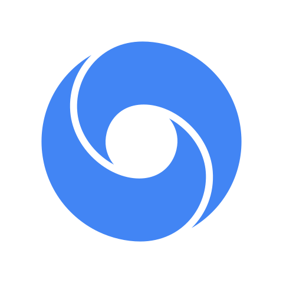
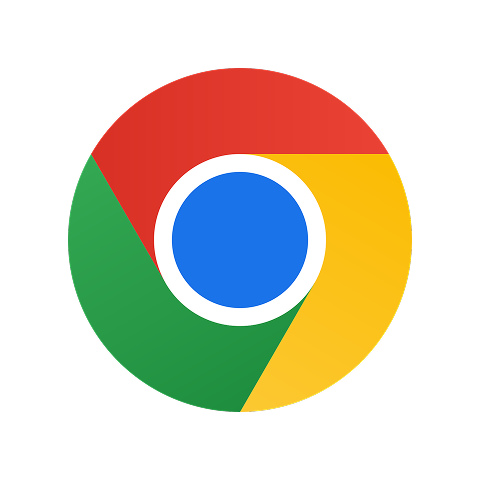
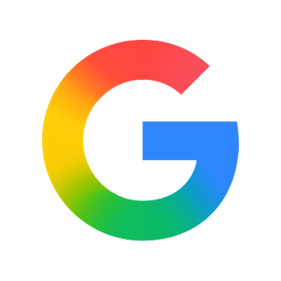
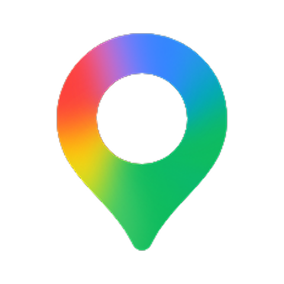
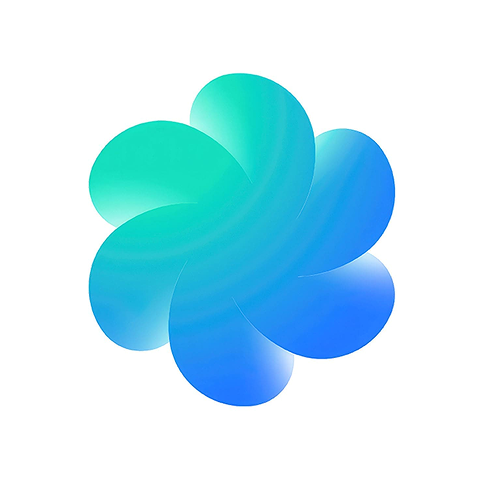
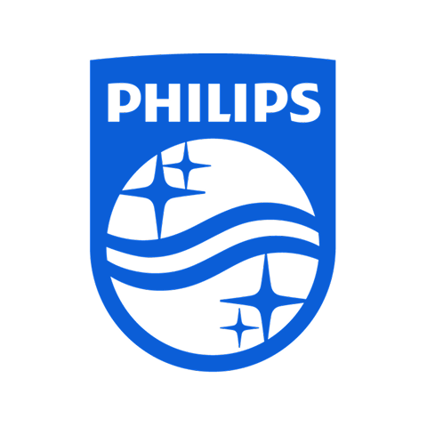

Disco
A Google bet on web-based generative interfaces (collab between Chrome + Creative Lab + Google DeepMind). I switched from manager to IC to lead this, helped pitch it into existence, and took it from concept to a Google Labs launch. Several of its experiments have since shipped in Chrome.
Design Lead + AI Prototyper + PM2024–2026

Google DeepMind
A run of design sprints with Google DeepMind teams. In the latest one, I was the only designer helping teach Gemini 4 what "good design" looks and behaves like for GenUI. Before that, I teamed up with them on an earlier GenUI sprint for GenTabs and a few other AI product incubations.
Design Lead, in sprints2025–2026

Chrome
Joined as the most junior designer and became the design manager for Chrome on Android within 2 years, leading a team of 4–7 designers. Led platform-level design while spinning up new investment areas for the org. Shipped features to billions of users, landed multiple patents, moved stubborn metrics, and got featured in 2 Google I/O announcements.
Designer → Lead + Manager2019–2025

Google.org
Design sprints in partnership with humanitarian organizations that are doing impactful work
globally, including UNHCR and Learning Equality.
Design Consultant, in sprints2018–2019

Google Maps
A concept reimagining Google Maps for local communities. Led it from early vision through prototyping, and pitched directly to leadership.
Design Intern2018

NBA x Daydream VR
An immersive basketball watching experience in VR for the NBA. This one was all about
designing and prototyping for a medium that barely had a design language yet.
VR Prototyper2018

Philips Lighting
Interned at Philips Lighting in the Netherlands, working on Smart City initiatives and the
frameworks behind them.
Design Intern2018